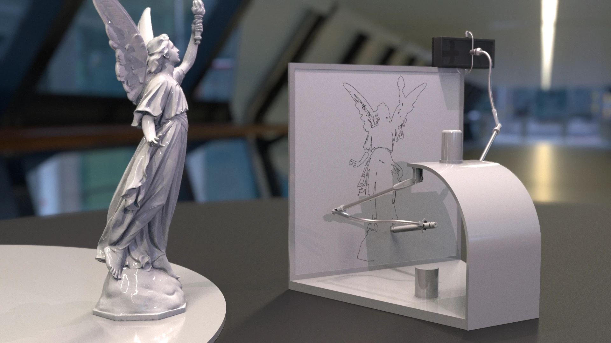
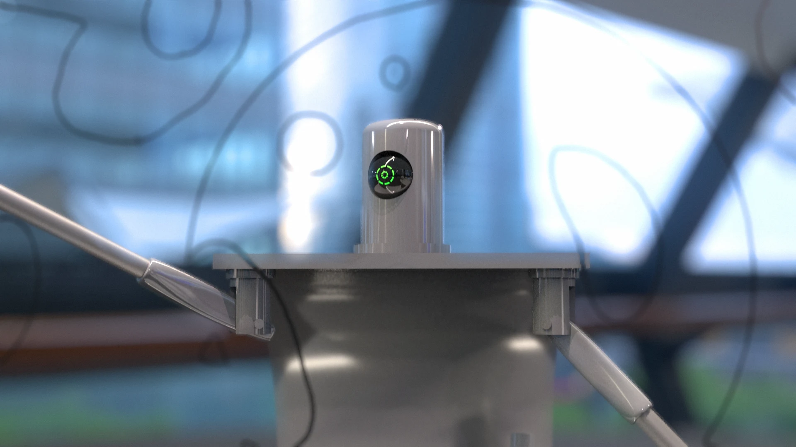
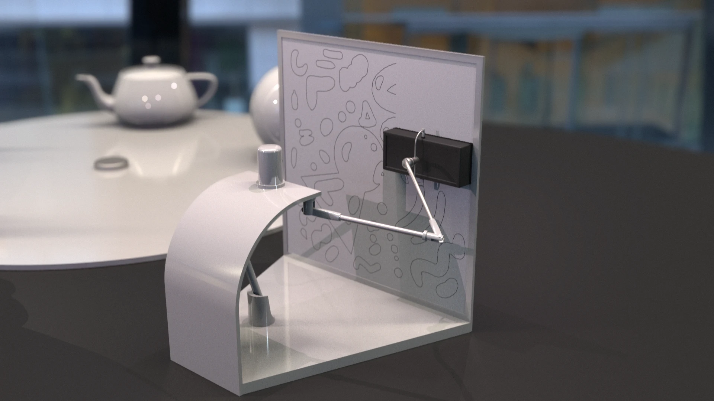

This robot, modeled, rigged, and procedurally animated entirely in Houdini, draws whatever 3D subject is placed in front of its optical sensor and automatically erases its previous work whenever a new subject is introduced. All 3D drawing subjects were sourced from the Stanford 3D Scanning Repository.


